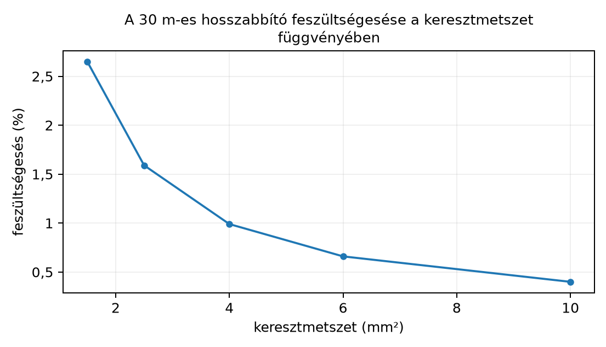

Egy hosszabbító kábel működés közben melegszik, a feszültség a kábel végén kisebb, mint a dugaszoló aljzatnál; egy motor tekercsének ellenállása hidegen kisebb, mint járás közben; egy izzólámpa bekapcsoláskor rövid időre nagyobb áramot vesz fel, mint üzemszerűen. Mindhárom jelenség mögött ugyanaz áll: a vezető ellenállása függ az anyagától, a méretétől és a hőmérsékletétől. Ha ezt érted, előre tudod becsülni a várható feszültségesést, a kábel melegedését vagy egy tekercs várható ellenállását – anélkül, hogy mindig csak mérnél.
Képzeld el a vezetéket úgy, mint egy csövet, amelyben apró golyók (a szabad elektronok) áramlanak. Minél hosszabb a cső, annál többször ütköznek a golyók a falába vagy a rácshibákba, tehát az ellenállás annál nagyobb. Ha a cső keresztmetszete nagyobb, egyszerre több golyó fér el, az ütközések hatása kisebb, így az ellenállás kisebb. Az anyag minősége pedig megmondja, hogy mennyire „engedékeny” a vezető rács: a rézben szabadabban mozognak az elektronok, mint például alumíniumban vagy vasban.
Egy egyszerű számpélda: 20 m hosszú, 1,5 mm² keresztmetszetű rézvezeték ellenállása 20 °C-on körülbelül 0,23 Ω. Ha 10 A áram folyik rajta, a vezeték egyik erén esik. Egy 230 V-os egyfázisú fogyasztóhoz azonban két ér (fázis és nulla) vezet, ezért a fogyasztó kapcsain hiányzó feszültség kb. , azaz kb. 2%. Ha a kábel hosszabb vagy vékonyabb, ez gyorsan nő.
Definíció. A fajlagos ellenállás (jele , görög ró) az adott anyag egységnyi hosszúságú és egységnyi keresztmetszetű darabjának ellenállása, adott hőmérsékleten. Gyakori mértékegysége a $ \text{Ω}\cdot\text{mm}^2/\text{m} $, de SI-ben a $ \text{Ω}\cdot\text{m} $ is használatos. Átváltás: $ 1,\text{Ω}\cdot\text{mm}^2/\text{m} = 10^{-6},\text{Ω}\cdot\text{m} $.
A gyakorlatban használt közelítő értékek 20 °C-on:
| Anyag | () | () |
|---|---|---|
| Réz (Cu) | 0,0175 | |
| Alumínium (Al) | 0,028 | |
| Sárgaréz | kb. 0,07 | kb. |
| Vas/acél | kb. 0,10–0,13 | kb. |
Ezek a számok anyagminőségtől és szabványos besorolástól függően kissé eltérhetnek (ellenőrizendő: a pontos érték a gyártói adatlap vagy az aktuális szabvány szerint).
Összefüggés. Egy homogén anyagú, állandó keresztmetszetű vezető ellenállása:
ahol: - a vezető ellenállása (), - a fajlagos ellenállás (), - a vezető hossza (), - a vezető keresztmetszete ().
Fontos, hogy a mértékegységek összeillenek: ha mértékegysége , akkor a hosszt méterben, a keresztmetszetet pedig négyzetmilliméterben kell behelyettesíteni. Ha mértékegysége , akkor a keresztmetszetet négyzetméterben kell megadni, tehát .
Definíció. A fajlagos vezetés (vezetőképesség) a fajlagos ellenállás reciproka:
Mértékegysége gyakran (vagy , ahol a siemens (S) a vezetés egysége). A réz fajlagos vezetése 20 °C-on kb. , az alumíniumé kb. . A vezeték méretezésében sokszor a fajlagos vezetéssel számolunk, mert a képlet egyszerűbbé válik: a vezető vezetése .
Egy lakásfelújítás során 25 m hosszú, 2,5 mm² réz vezetéket kell beépíteni. Mennyi a vezeték ellenállása 20 °C-on?
Adott: - Réz, ezért - -
Keresett:
Képlet:
Behelyettesítés:
Ellenőrzés: A mértékegység , tehát az eredmény -ban van. A nagyságrend is reális: egy 25 m-es, 2,5 mm²-es rézvezeték ellenállása néhány tized ohm.
Ha ugyanez a vezeték üzemi hőmérsékleten 60 °C-ra melegszik, mennyi lesz az ellenállása? A réz hőmérsékleti tényezője (ellenőrizendő: a pontos érték a szabványos vezetőosztálytól függ).
Adott: - - - -
Képlet:
Behelyettesítés:
Ellenőrzés: A melegedés 40 K, az ellenállás kb. 15,6%-kal nő, ami reális a réznél. A mértékegység , a szorzat dimenziótlan tényező, mert dimenziótlan.
A fémek ellenállása a hőmérséklet növekedésével nő, mert a melegebb rácsban jobban rezegnek az atomok, és az elektronok gyakrabban ütköznek. A gyakorlatban a szokásos üzemi hőmérséklet-tartományban (kb. –40 °C-tól 180 °C-ig) a változás lineárisnak tekinthető:
ahol a 20 °C-ra vonatkoztatott hőmérsékleti tényező ( vagy ). Rézre és alumíniumra ez kb. körüli, más fémekre ettől eltér.
A kifejezés átalakítható egy másik referencia-hőmérsékletre is: ha ismerjük az ellenállást hőmérsékleten, akkor hőmérsékleten az ellenállás:
amennyiben értékét a referencia-hőmérséklettől függetlenül állandónak vehetjük a vizsgált tartományban. Ez a közelítés a gyakorlatban a legtöbb számításhoz elegendő.
A fenti összefüggésből a hőmérséklet is kifejezhető, ha két ellenállásmérést végzünk:
Ezt használjuk például motorok tekercsének hőmérséklet-meghatározására ellenállásmérésből.
Az alábbi grafikon az 1. és 2. példa 25 m-es, 2,5 mm²-es rézvezetékének ellenállását mutatja −20 °C és 80 °C között: az ellenállás a hőmérséklettel lineárisan nő, 20 °C-on 0,175 Ω, 60 °C-on 0,202 Ω.
Egy aszinkronmotor tekercsét hidegen, 20 °C-on mértük: . A motor üzemi melegedése után a tekercs ellenállása . A tekercs réz, . Mekkora a tekercs becsült hőmérséklete?
Adott: - - - -
Képlet:
Behelyettesítés:
Ellenőrzés: Az ellenállás 0,22/0,80 = 27,5%-kal nőtt; . A becsült hőmérséklet 90 °C, ami egy motortekercsre üzemszerűen elfogadható. Ha a mért érték alapján a tekercs hőmérséklete meghaladná a szigetelési osztály szerinti határértéket, a motor túlterhelt vagy hűtése elégtelen. (ellenőrizendő: a szigetelési osztályok szerinti megengedett határhőmérsékletek a gyártói adatlapról és a vonatkozó szabványból vehetők.)
A vezető ellenállása közvetlenül meghatározza a rajta eső feszültséget. A Feszültségesés és a vezeték méretezése alfejezetben majd részletesen számolunk, de itt az alapösszefüggés már látszik: ha egyfázisú fogyasztóhoz vezetéken áram folyik, a vezetéken (oda-vissza, tehát kétszeres hosszon) eső feszültségesés közelítőleg:
Minél kisebb a keresztmetszet, annál nagyobb a feszültségesés. A méretezéskor azt a legkisebb keresztmetszetet keressük, amelynél a feszültségesés a megengedett határon belül marad (a fogyasztói berendezésen belül jellemzően világításra 3%, más fogyasztókra 5% az ajánlott határ; a forrás a kisfeszültségű berendezések szerelési szabványa – ellenőrizendő: MSZ HD 60364-5-52 feszültségesésre vonatkozó melléklete és a tervezői előírás). Ehhez a rézre és alumíniumra megadott értékét kell használni.
Továbbvitt eredmény. A vezető ellenállásának kiszámítása az képlettel, valamint a hőmérsékletfüggés az képlettel alapvető eszköz lesz a következő alfejezetekben: - a Fémek és ötvözetek a villamosiparban alfejezetben az anyagok kiválasztásánál, - a Földelők és földelési ellenállás alfejezetben a földelő elektródák ellenállásának becslésénél, - valamint a Feszültségesés és a vezeték méretezése alfejezetben a vezeték-keresztmetszet meghatározásánál.
Ezt az összefüggést tehát a gyakorlatban is rendszeresen alkalmazni fogod, nem csak elméleti példaként.
Egy fűtőbetétes eszköz 2 kW teljesítményű, 230 V-os. A szerelő egy 30 m hosszú, 1,5 mm²-es hosszabbítóval csatlakoztatja. A hosszabbító kábel réz, így a kábel oda-vissza számított ellenállása:
A fűtőtest névleges árama: . A kábelen eső feszültség:
Ez még elfogadhatónak tűnhet (kb. 2,6%), de ha a csatlakozási ponton is van feszültségesés, vagy a kábel feltekerve van (rossz hűtés), a kábel melegedhet. Ráadásul ha a kábel 2,5 mm²-es lenne, az ellenállás csak kb. 0,42 Ω lenne, a feszültségesés pedig kb. 3,6 V-ra csökkenne. A szerelő ezért a hosszabbító kábelt mindig a fogyasztó teljesítményéhez illő keresztmetszettel választja ki.
Az alábbi grafikon ugyanezt a hosszabbítót különböző keresztmetszetekkel mutatja: a feszültségesés a keresztmetszettel fordítottan arányos (1,5 mm²: 2,65%, 2,5 mm²: 1,59%, 4 mm²: 0,99%, 6 mm²: 0,66%).

Helytelen mértékegység-átváltás. A fajlagos ellenállást -ben adják meg, de a keresztmetszetet méterben számolják. Például -t -ként behelyettesíteni óriási hibát okoz. Mindig ellenőrizd, hogy a mértékegységéhez igazodik-e a keresztmetszet és a hossz egysége.
A hőmérséklet-tényező rossz használata. Ha a 20 °C-os ellenállásból számolunk, akkor hőmérséklet-különbséggel szorzunk. Ha a képletet abszolút hőmérsékletre (kelvinre) írjuk fel, ügyelni kell a referencia-hőmérséklet helyes átszámítására. A gyakori hiba: , ahol a 0 °C-os ellenállás, nem pedig a 20 °C-os. Keverés esetén az eredmény jelentősen eltér.
Ellenállásmérés motoron hidegen, majd az üzemi ellenállásból hőmérséklet becslése anélkül, hogy a mérővezeték ellenállását kompenzálnák. Kétvezetékes mérésnél a mérőzsinór ellenállása hozzáadódik a tekercs ellenállásához, ami főleg kis ellenállásoknál (pl. 0,1–1 Ω) torzítja az eredményt. Ilyenkor négyvezetékes (Kelvin) mérést vagy a mérőzsinór ellenállásának levonását kell alkalmazni.
1. feladat (A)
Egy rézvezeték 50 m hosszú, 4 mm² keresztmetszetű. Mekkora az
ellenállása 20 °C-on?
()
2. feladat (A)
Egy alumínium vezeték keresztmetszete 6 mm², hossza 80 m. Mekkora az
ellenállása 20 °C-on?
()
3. feladat (B)
Egy fűtőszál ellenállása 20 °C-on 12 Ω. A hőmérsékleti tényezője
.
Mennyi lesz az ellenállása 120 °C-on?
4. feladat (B)
Egy motor tekercsét hidegen, 20 °C-on mértük: 1,25 Ω. Meleg állapotban
az ellenállás 1,6 Ω. A tekercs réz,
.
Becsüld meg a tekercs hőmérsékletét!
5. feladat (C)
Egy 25 m hosszú, 2,5 mm²-es rézvezetéken 16 A folyik. Becsüld meg a
vezetéken eső feszültséget (oda-vissza számítva), ha a vezeték
hőmérséklete 20 °C. Ha ugyanez a vezeték 60 °C-ra melegszik, hány
százalékkal nő a feszültségesés?
6. feladat (D)
Egy raktárban egy 12 V-os halogénlámpa-rendszert üzemeltetnek. A
transzformátortól a lámpáig 8 m-re van a csatlakozási pont. A lámpa
áramfelvétele 5 A. A szerelő 1,5 mm²-es rézvezetéket használ. A lámpán
mért feszültség 10,8 V. Mekkora a vezeték ellenállása oda-vissza?
Mekkora a feszültségesés? Indokold, hogy a vezeték megfelelő-e, ha a
megengedett feszültségesés 5%! (Tipp: a vezeték oda-vissza hossza
kétszeres.)
Hamis. A vezeték ellenállása egyenesen arányos a hosszával, nem fordítottan: , tehát minél hosszabb, annál nagyobb az ellenállás.
Hamis. A fémek ellenállása a hőmérséklet növekedésével nő, mert a rácsrezgések erősödnek, és az elektronok gyakrabban ütköznek.
.
A számítás maga helyes, a hiba a mértékegységben van: az eredmény 0,117 Ω, nem mΩ. Azaz 117 mΩ, nem 0,117 mΩ.
Mert a fémrács atomjai melegebb állapotban nagyobb amplitúdóval rezegnek, így a szabad elektronok ütközése gyakoribb, ami megnöveli az ellenállást.
Réznek kisebb az ellenállása, mert a fajlagos ellenállása kisebb (0,0175 Ω·mm²/m), mint az alumíniumé (0,028 Ω·mm²/m). Azonos méretnél a réz vezetőképessége jobb.
1. feladat (A)
Adott:
,
,
Képlet:
Behelyettesítés:
Ellenőrzés: A mértékegység Ω, a nagyságrend reális.
2. feladat (A)
Adott:
,
,
Képlet:
Behelyettesítés:
Ellenőrzés: 0,373 Ω reális.
3. feladat (B)
Adott:
,
,
Képlet:
Behelyettesítés:
Ellenőrzés: A 100 K hőmérséklet-növekedés 0,004·100 = 0,4 relatív ellenállásnövekedést ad, 40% növekedés, tehát 12 → 16,8 Ω helyes.
4. feladat (B)
Adott:
,
,
,
Képlet:
Behelyettesítés:
Ellenőrzés: Az ellenállásnövekedés 0,35/1,25 = 28%, ami 0,28/0,0039 ≈ 71,8 K hőmérséklet-különbséget ad, 20 + 71,8 = 91,8 °C.
5. feladat (C)
Adott:
,
,
,
Először kiszámítjuk a vezeték ellenállását 20 °C-on egy vezetőre:
Oda-vissza (kétszeres hossz):
Feszültségesés 20 °C-on:
A feszültségesés 230 V-hoz képest .
60 °C-on az ellenállás:
Oda-vissza: , feszültségesés:
Növekedés: , azaz 15,5% növekedés. Ez megegyezik az ellenállás növekedésével, mert az áram változatlan.
6. feladat (D)
Adott: 12 V-os rendszer, , , oda-vissza hossz , ,
Vezeték ellenállása oda-vissza:
Feszültségesés:
A lámpán mért feszültség 10,8 V, ami a 12 V-nál 1,2 V-tal kisebb. A számított feszültségesés 0,93 V, ami megközelíti a mért értéket; a különbség a csatlakozási ellenállásokból, a mérési pontatlanságból vagy a vezeték melegedéséből adódhat.
A mérésből: ; a képletből . A kb. többlet a kötések/csatlakozók átmeneti ellenállása – ezeket is ellenőrizni kell. Sem a mért (), sem a számított () esés nem fér bele az 5 %-ba.
Megfelelőség: A megengedett feszültségesés 5%: . A számított 0,93 V meghaladja ezt, tehát a vezeték nem megfelelő 5%-os határ betartásához. Nagyobb keresztmetszetet (pl. 2,5 mm²) kellene választani, amelynek oda-vissza ellenállása , feszültségesése , ami már a határon belül van. Ez a 0,56 V csak akkor teljesül, ha a mérésből kimutatott kb. -os átmeneti ellenállást is megszüntetjük (kötések, csatlakozók tisztítása, újrakötése); a kötések javítása nélkül 2,5 mm²-rel is kb. () esne. A helyes sorrend: előbb a kötések rendbetétele, majd a keresztmetszet növelése.
A vezető ellenállása az anyagtól, a mérettől és a hőmérséklettől függ. Az alapképlet: , ahol a fajlagos ellenállás. A réz 20 °C-os fajlagos ellenállása kb. , az alumíniumé kb. (a pontos érték a szabványos anyagminőségtől függ, ezért mindig ellenőrizendő). A fémek ellenállása a hőmérséklettel nő: , ahol a rézre és alumíniumra . Ebből két ellenállásmérésből becsülhető a tekercs hőmérséklete is: . Ezeket az összefüggéseket használjuk a vezetékméretezésnél a feszültségesés becslésére, valamint később az anyagválasztásnál és a földelési ellenállás számításánál: Fémek és ötvözetek a villamosiparban, Földelők és földelési ellenállás, Feszültségesés és a vezeték méretezése.
A fajlagos ellenállás és a hőmérsékleti tényező pontos értékei a vezetőanyag szabványos osztályától, tisztaságától és a hőmérséklettől függnek; a fent megadott értékek gyakorlati közelítések. A pontos értékeket a mindenkori anyagszabványok, gyártói adatlapok és a hálózati engedélyes előírásai tartalmazzák, ezért azokat minden ellenőrzési vagy tervezési feladat előtt ellenőrizni kell. Az SI-mértékegységek hivatalos definíciói a BIPM kiadványában találhatók (a forrást ebben a könyvben nem hivatkozzuk pontosan).